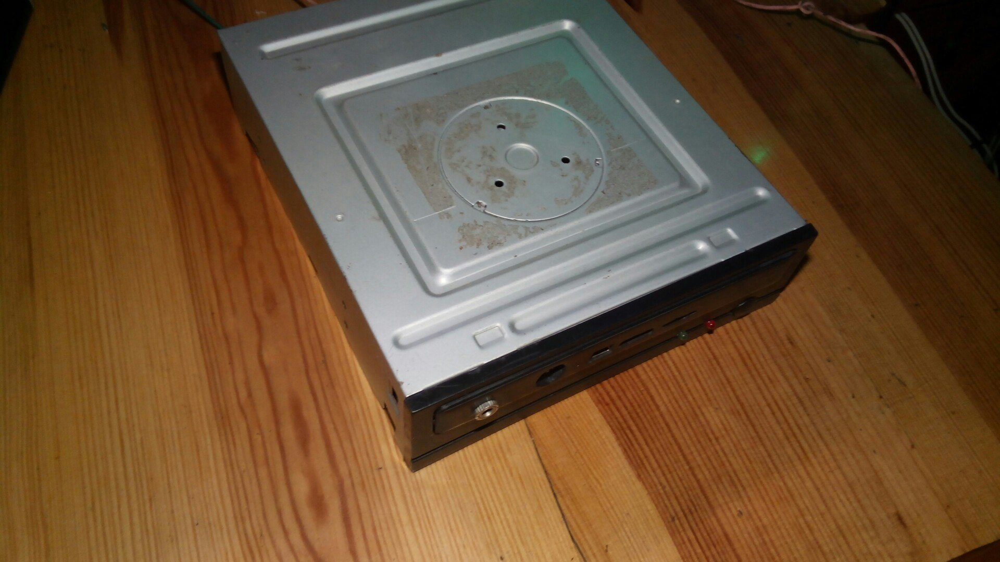

TV Box из планшета
Итак, для реализации данной задумки необходимо:
Берём старый планшет, нас интересует из него только сама плата. Главное требование к имеющейся плате - наличие выхода HDMI, без этого смысла в дальнейших действиях не будет.
Достаём старый, нерабочий CD/DVD привод. Он у нас будет в роли корпуса. Тщательно и осторожно разбираем его и достаём все внутренности (они в этом проекте ни к чему). Оставляем только переднюю панельку, нижнюю крышку, пластиковое внутренее основание(оно будет выполнять роль распорки и крепления акустики) и винтики.
На передней(пластиковой панели от привода) размечаем(или на глаз) прикидываем расположение всех разъемов и входов-выходы нашей платы. Затем паяльником и тонким жалом делаем отверствия и подгоняем их напильником до примерно соответствующих размеров.
Когда выполнили данные действия вставляем плату в получившиеся отверствия и фиксируем ее с помощью силиконового клея. (отдельно пришлось вывести джек 3.5 под микрофон, немного не ровно, так как ровно не позволял корпус).
Примеряем расположение платы в корпусе при установки передней панели. Для более прочной фиксации платы в корпусе нужно сделать держатели. Я использовал для этого пластиковые патроны от лампочек, предварительно подогнав их под необходимые размеры. Зафиксировал данные держатели с помощью суперклея и соды.
Из пластикового внутреннего основания вырезаем по размеру распорку для крепления акустического динамика(так как выход усилителя планшета моно - нам нужен будет только один динамик) . Находим приемлемый по размерам, качеству и громкости звучания динамик и фиксируем его на пластиковой распорке. Подпаиваем все элементы на устройстве и получаем почти завершенный вариант.
Не хватает DC-DC понижающего преобразователя и разъема microUSB для питания устройства, но это не мешает устройству работать пока от регулируемого блока питания.
Осталось подключить монитор с помощью HDMI переходника а так же любое устройство ввода через OTG кабель. И можно вполне наслаждаться музыкой , видео, играми, серфингом в Интернете и прочими полезными функциями полученного устройства.